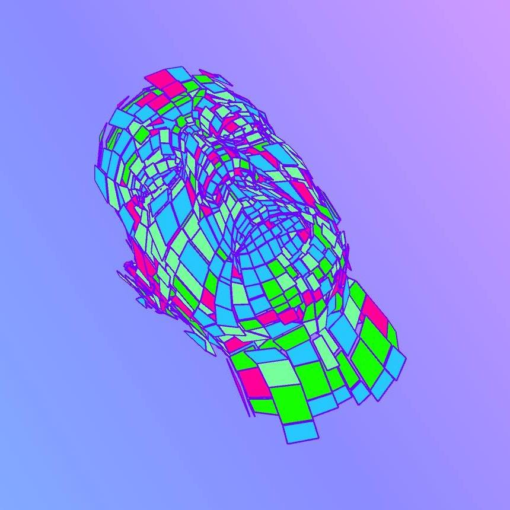

1. Introduction
Media content on the web

CENTRO | 2016
Diego Montesinos
1.1 Audiovisual media on the web?
We refer as "audiovisual media on the web" to the set of practices whose purpose is to create enriched audiovisual experiences with a wide range of narratives (interaction, art, immersion, fun) in a web environment.
The "audiovisual media on the web":
- moves away from the conventional use of the web.
- takes advantage from the internet.
- can create large-scale experiences.
- easily achieves cross-platform support.
1.2 Enriched interaction: HTML5

HTML5 (our hero in this novel) is the latest version of markup lenguage HTML. Adds new elements to the web and groups a wide set of technologies that allows web sites to have:
- 2D and 3D graphics.
- Innovate ways of communication.
- Multimedia: Image and Video.
- Access to device resources.
- Audio synthesis in real time.
The technologies that integrate HTML5 are specified and standardized for W3C. Every web browser (Google Chrome, Mozilla Firefox, Internet Explorer, Safari, etc) has the responsability to implement these technologies. Not always works in the same way.
1.3 Technologies we will learn this fall.
See References for examples.
DOM Manipulation
When a page is loaded, the browser creates a tree-like structure called Document Object Model
of the view.
We can modify the site dinamically like changing CSS rules or manipulating the DOM elements.
WebAudio
It is an API where you can create, play and manipulate in real time audio on a web browser.
Chrome MusicLab
WebAudio samples
More WebAudio demos
WebGL
Standard specification that renders 3D graphics by GPU on a
web browser. Since WebGL talks directly with OpenGL it isn't necessary to install 3rd party plugins or extra tools.
3D Landscapes with WebGL
ThreeJS
ShaderToy
WebRTC y WebSockets
New techonologies that enable to have full-duplex, bidirectional and
real-time communication channels.
WebRTC can connect two browsers (peer to peer) without a middle-server, and WebSockets connects
a client with a server.
StarWars lightsaber
KungFu Webcam
Canvas y SVG
Elements that allow to create and manipulate 2D graphics.
Canvas is used for raster graphics, and SVG (Scalable Vector Graphics)
is used for vector graphics.
ProcessingJS
D3.js
Geolocation
Gets the geolocation (latitude and longitude) of the user.
Device resources and peripherals: getUserMedia(), giroscope, Arduino, Leap, etc
We can get hardware resources and data from the device like webcam streaming, microphone streaming, access to serial ports, and sensors: giroscope, Leap, etc.
1.4 Support
Since these technologies are implemented by the browsers, we shouldnt assume that all users have can display correctly our sites.
Therefore, our sites should detect compatibility with
these technologies and suggest the user to use other browser.
Can I use?
1.5 Course format and assessment criteria
-
Weekly lectures of 4 hours:
Theory (2 hours), guided exercises and examples (1 hour) and personal excersies and questions (1 hour). -
Assessment:
Weekly assignments and biweekly tests (30%)
Projects (70%)
1.6 Development tools
Terminal
The terminal, console or bash is an application for interact
and control the system through commands.
It is a powerful tool for development since you gain greater
control over system functions and you can run very useful scripts.
Below are listed the basic commands of the terminal.
pwd
Show the path of the current directory.
$ pwdls
List the content of the current directory.
$ ls$ ls -l$ ls -lacd
Change the current directory to other.
$ cd Desktop$ cd $ cd ..$ cd Centro/web-media-centromkdir
Create a new directory.
$ mkdir coolStuff $ mkdir Desktop/pruebarm
Remove a file or directory.
$ rm passwords.txt$ rm -r EntregaFinalWARNING!!
cp
Copy a file or a directory.
$ cp -r paquitoUSB/Tarea Documents/Tarea $ cp pruebaCopia Desktop/pruebaCopiamv
Move from the current location or rename a file or a directory.
man
Show (if exists) a manual for a command.
$ man ls$ man pwdsudo
Execute a command or a script in "super user" mode.
sudo stands for "the super user does". Commonly used for install things.
$ sudo npm install$ sudo pip installWARNING!!

Git
Is a version control system that is used for software development
and other version tasks.
Uses a distributed management, it means that every developer have a
local copy of the repository with local changes and sync it when is
necesary.
Git (Get or create a repository)
For create a repository, first make a dir and use:
$ git initIf you already have a remote repository, move to a convenient directory and use:
$ git clone https://server/.../project.gitGit (Workflow - Trees)
All mess with git it's made up of trees of commits.
Each commit mark a set of changes in a bunch of related files with
a meaning.
Git (Workflow - Status)
You can get a overview of the status of the repo using:
$ git statusIf you've changed, added, or removed files you'll see here.
Git (Workflow - Staging commit)
If you feel already to mark a commit (a meaning change), its time
to stage a commit.
Stage a commit is prepare it: add the file that are part of the change,
indicate new or removed files. The command used for is:
$ git add file1 file2 dir1$ git rm file1 file2Git (Workflow - Make a commit)
When stage step is finished, the commit is make with:
$ git commit -m "Description of the commit here."Be careful to make short and enough clearly descriptions.
Git (Workflow - Send changes to remote)
To "save" the commits in the remote server, execute:
$ git push origin masterGit (Workflow - Sync changes)
To fetch changes of the server, execute:
$ git pull origin masterText editor
For this course you can use any text editor, but it's prohibited use
of IDE.
Sublime Text and
Atom are the best options.